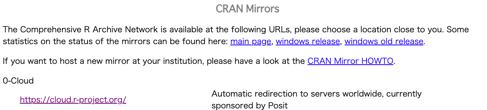
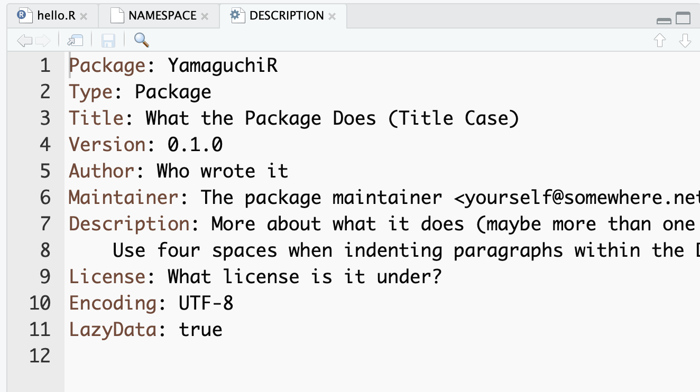
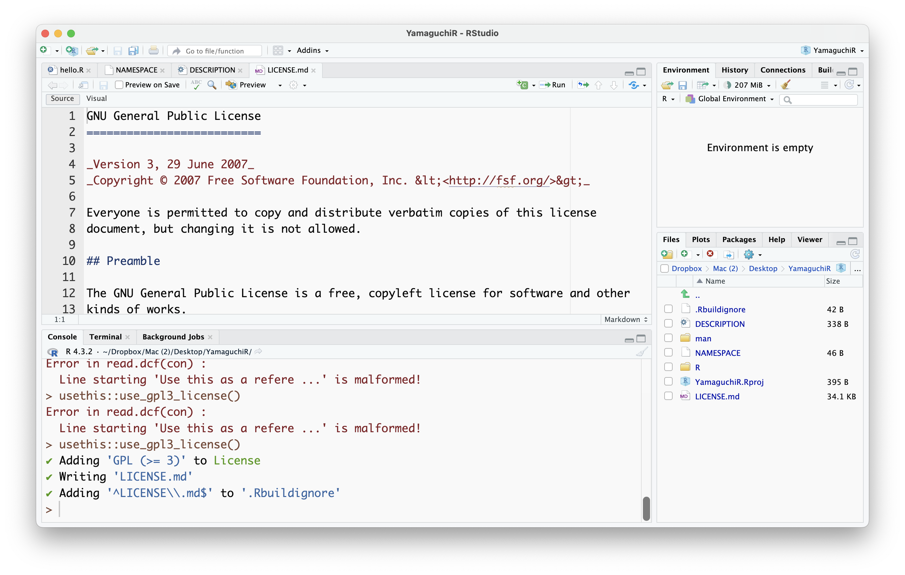

[1] 4関数とパッケージの作り方
初級から中級へのステップアップ
自己紹介
中級者とは何か
初級者を名乗るのは簡単なことですが，どこから中級者を名乗ればいいのかは難しい。
- 利用歴X年目から？
- パイプ演算子を使い始めたら？
個人的には，↓ぐらいが中級者のラインではないかと。ちなみに，いずれも「案ずるより産むが易し」で，やってみたら意外と簡単なステップなんです。
- SピーSSなど，他の統計ソフトをアンインストールした
- 関数やパッケージを作り始めた
- Quarto/Github/Shinyなどに手を出し始めた
今日は「関数とパッケージの作り方」をお話しするので，今日の話を聞き終わったら皆さんも中級者？
余談；Quartoって？
Quartoとは，文書作成ツールの名称。
- マークダウンという書式をつかって，プレーンテキストに記号を書き込みながら文書を作成します。
- HTML言語をブラウザが読める形にレイアウトするように，Quartoで書かれた文書をコンパイルしてhtmlやpdf,docx,epub,pptxなどのファイルに出力できます。
- このスライドもQuartoを使ってhtmlに変換しています。
Rmarkdownとどう違うの？
- RStudioにはRmarkdownという書式があり，これも同じような仕組み。
- RmarkdownやQuartoを使うメリットは，文書作成，統計計算，図の可視化などが一枚のファイルでできるので，別々のアプリを使って作る必要がないこと，計算プロセスなども文書に埋め込めることなどが利点。
- QuartoはRmarkdownの上位互換で，最近Posit社が力を入れている書式であり，RだけでなくPython, Juliaなど複数の言語をサポートしているところが特徴的。
関数を作る
関数をつかう
関数を使うのは簡単ですね。たとえば平方根を求めたいときに，
のように使うわけです。このとき，
sqrtは関数名- ()で関数に渡す値は引数(ひきすう，argument)
4という結果は戻り値(もどりち，value)
といいます。
関数を作る1；引数がひとつのばあい
関数を作る関数，functionをつかって次のように関数を作ることができます。
- 関数名に
functionでつくるオブジェクトを代入します。 - function
後ろの()`に，その関数がとる引数名を書きます。 - その後ろの
{}に関数の計算・操作を書きます。複数行可。 return関数に戻り値にするものを渡します
これで関数add2ができました。使い方は他の関数と同じです。
この関数は与えられた数字に2を足して返すだけ挙動ですが，うまく動いてますね！
関数を作る2；引数がふたつのばあい
さっきの関数は引数がひとつだけでした。複数指定するときは，()のなかに並べて書きます。
- この関数は2つの引数を取り，加えた値を返します。
- 引数を指定してやれば，順番を入れ替えてもOKです。逆にいうと，引数名の指定がなければ前から順に適用されていきます。
関数を作る3；デフォルトの設定
関数を作る時に，引数に値を渡しておくと，それがデフォルトの値になります。
- デフォルトの値があると，指定しなくてもその値が利用されます。
- 皆さんが今まで使っていた関数も，デフォルトで色々決まっていることがあります。
- ヘルプを見ると，どういう引数オプションがあるのかわかります。一度見ておくと，理解がいっそう深まりますよ〜😃
関数を作る4；注意点(スコープ)
関数の中で作った・使ったオブジェクトは，関数の外から参照できません。
これに続けて，関数の中でつかっていた一時オブジェクトtmpを参照してみましょう。
Error:
! オブジェクト 'tmp' がありません
実行が停止されました
Oh…! 😱
スコープのひみつ
関数の中で使った変数は関数の外で使えないというのは，不便に思えますが，実は親切設計。
関数の中で閉じている・まとまっていることで，オブジェクトがあちこちで上書きされたりすることがなくなります
変数がどこまで効いているかという概念を「スコープ」と言いますが，これができるまでのプログラミング言語(FortranとかBASICとか)は，長いコードの中で変数名がごっちゃになることがありました。
歴史的経緯で，「どこからでも変数名が見える」状態から，「全体で利用できる変数(グローバル変数)と，関数の中だけて使える変数(ローカル変数)にわける」状態へ，そして「もう全部関数の中に閉じ込めちゃえよ」となってきています。
Rは再利用する
しかし，Rは関数の中で見つからない変数があれば，環境変数を再利用します！ちょっとコワイ。
注目ポイントは，次の3点です。
pre_tmpはこの関数myFuncの引数ではない。pre_tmpはこの関数の中で違う数字を割り当てられている。- この関数が返すのは
tmpだけである。
これを使ってみると，おかしなことが起きるよ。
Rはこのように「再利用癖」があるので，注意しましょう。
関数を作るときは， 関数の中で使う変数は全て引数に指定することを心がけた方が良いかも。
関数を作る5；複数の戻り値
Rの関数が返すオブジェクトは一つだけ。もし複数の値を返したいのなら，listでまとめよう。
使い方の例；
Hands-on!(時間調整と休憩)
こんな感じで関数が作れます！色々作ってみよう。
- Rには不偏分散を計算する
varはあるけど標本分散を計算する関数はないよ。作ってみよう！ - 同じコードを3回書いたら，関数化することを考えよう！
関数を作るメリット
- 再利用性；同じ関数を他のプログラムでも再利用できます。
- モジュール性；プログラムを管理しやすい部分に分割できます。
- 保全性；部分に分割できているので，バグが見つけやすく，メンテナンスしやすくなります。
そしてたくさん関数を書いたら・・・・
パッケージを作ってみよう！
パッケージを使う
パッケージを「使う」のは割と敷居が低い
Rではデフォルトで持っているパッケージでも一通りの計算ができるが，より便利に・より専門的に使うためにはパッケージの導入は必須。
(心理統計で)よく使うパッケージとしては次のようなものが
- tidyverse
- psych
- rstan/cmdstanr
これらはlibrary関数で呼び出すことができる。欲しいパッケージはインターネットからとってくることができる。
- install.packages関数でインストール
- update.packages関数で一括アップデート
- RStudioのPacagesタブでGUI操作も！
あなたのパッケージはどこから?
- 一般的には，CRAN(The Comprehensive R Archive Network)という書庫ネットワークからダウンロードする(している)。 
- 古いパッケージでもはやCRANに載っていない，というときはアーカイブや作者のサイトからファイルをダウンロードしたりする。ちなみに，パッケージは複数のファイルをまとめて
.tar.gz形式で圧縮されています。- →.tar.gzはUnix系の圧縮方法で，tarで複数のファイルを一つにまとめ，gzipで圧縮するという2段階ステップを経ているのでこんな感じの拡張子になる。
- 最近はGithubをつかって公開されていることも多く，
devtoolsパッケージを使ってダウンロードすることができる。
(余談)Githubって？
- GithubはGitというシステムをインターネットをHubとして使うようにしたもの。
- Gitはバージョン管理システムのこと
- commitとは保存と同じような意味。ファイル構造やファイルの差分を記録していくこと。
- 幹の部分をいきなり変更するのではなく，枝葉で修正を加えて，「よーしこれで！」という時に幹をアップデートする仕組み。
(余談)Githubって？(その2)
- さっきのcommit/pull requestをネット上でやる。
- Githubというサイトにファイルを保存する場所(レポジトリ)を作ってやり取り。
- ネットに挙げる(push)，ネットから最新版を取ってくる(pull)という作業が含まれる。 -
(余談)Githubって？(その3)
Githubのメリット
- 複数チームによる並列的な開発に貢献！
- もとはLinuxの開発システム
- 個人で使ってもなんら問題ない。
- 文系のひとが使うことにもメリットが(作文・執筆)
- 卒論の執筆状況の管理・バックアップに使える！指導教員も安心
Githubの便利機能
- Github PagesというWebサイトを作ることも
- パッケージ/ソフトウェアの開発と公開が同時に進められる
- 随時Bug Fixができる
- CRANへの登録は審査があって時間がかかるので，最近はこちらで野良パッケージを公開する人も多い
- Webサイトの書き方はRmd/Quartoでカンタン
- RStudioと連携できる
- パッケージ/ソフトウェアの開発と公開が同時に進められる
宣伝
https://kosugitti.github.io/Exametrika/
Readme.mdが自動的にサイト化される
Githubのレポジトリはこんな感じ
パッケージを作ってみよう
パッケージには関数，データセット，ヘルプファイルが含まれますが・・・
パッケージを自作するメリット
- 勉強になる！
- 統計モデルは数式で説明されて，使う時は関数の使い方を学ぶ
- 解説と実践の間に乖離があると思いません？
- 数式の解説って，式展開を追うだけでわかりますか？数値で確認したくない？
- 統計モデルは数式で説明されて，使う時は関数の使い方を学ぶ
- 再利用ができるようになる！
- 同じコードを3回書いたら関数化しよう。
- いつも書く自分のコードは書いて保存しておこう
- ヘルプファイルで自分への記録に
- 共有しよう
- データセットも関数も，まとめて
library(MyPackage) - 最初に書いた自作パッケージは科研のもの
- データセットとよく使うコードをパッケージングして共同研究者とシェア
- データセットも関数も，まとめて
パッケージを作る環境はずいぶんと整っています！
- RStudioがプロジェクトをパッケージ作成仕様にしてくれる
- devtools,usethis,roxygen2など，パッケージを手助けしてくれるパッケージが
devtoolsはスケルトン，チェック，ビルドなどを手助けしてくれるusethisは初期設定などをカンタンにしてくれるroxygen2はヘルプファイルを自動的に作ってくれる
- Githubと連携すれば公開サイトを作るのもカンタン


やってみよう(その1)
まずは新しいプロジェクトから
やってみよう(その2)
サンプルコードhello.Rというのが表示されていると思います。 Filesタブを見ると，他にもNAMESPACE，DESCRIPTION，manフォルダ，Rフォルダがあるのがわかります。 (.Rprojはプロジェクトファイル，.Rbuildignoreはプロジェクト関係なので一旦無視)
やってみよう(その3)；しっておこう
- パッケージのフォルダは
R,man,data,inst,testsからなるRフォルダにRのコードを書きますmanフォルダにヘルプファイルを入れますが，roxygen2が自動生成するので気にする必要なし！dataフォルダにパッケージと共に共有するデータを入れます。instはその他のメタデータ，testsは検証テストコードなどを入れます。- 個人的には
developフォルダをつくって下書きのコードを入れておきます。
- フォルダの外にはDESCRIPTIONとNAMESPACEが
- DESCRIPTIONはパッケージの説明(著者名，連絡先，ライセンス，依存パッケージなど)を書きます。あとで見てみましょう。
- NAMESPACEは自動生成されるので 手をつける必要なし！
- 名前空間といって，パッケージがもつ関数名のリストなどが入ります。同じ関数名があると上書きしちゃうよ，という警告を出すために必要。
やってみよう(その4)
BuildタブのConfigure Build Tools…をクリックし，自動生成(ラクチン！)してくれるための設定をしておこう。
やってみよう(その5)；名前空間は大事！
名前空間をRoxygen管理下に
NAMESPACEはパッケージが使う関数名を書くところなので，自分で作らないのが基本。 でもRoxygenで自動生成するためには，すでに存在しているNAMESPACEがRoxygenで作られたものでなければならないので，最初のNAMESPACEは削除しておこう。
あるいは， usethis::use_namespace()で上書きしても良い。
開いた時に「このドキュメントは読むの専門だぞ(書き込んじゃダメだぞ)」，roxygen2によって作られました，と書いてあればOK。以後自動的に書き加えられていきます。
やってみよう(その6)；お品書きから
次はDESCRIPTIONの編集。これは手書きで。
Title; パッケージ名Author; 作者名Maintainer；保全・管理する人。Description; 説明書
※英語です！chatGPT先生に翻訳してもらおう！
ほんまなんでもやってくれますな
やってみよう(その7)；usethisパッケージの力を借りて
ライセンスの追加
パッケージを公開する時の権利関係を明記しておきましょう。 usethisパッケージにはいろいろなライセンスが用意されており，名前だけでうまくやってくれるようになっています。
use_mit_license；短くて理解しやすいライセンス。このライセンスでは，誰でもコードを変更し配布することを許可しているが，下のライセンスと著作権表示は保持されるというもの。use_gpl3_license；GPLは「ソフトウェアを使う自由」「変更する自由」「ソフトウェアを共有する自由」「変更を共有する自由」をうたうフリーソフトウェアの精神。R自体がGPLに基づいています。use_apl2_licence；アパッチ(Apache)ライセンスは，Apacheソフトウェア財団が公開し ているもので，商用利用や改変ができるライセンス。
追加されたライセンス
LICENSE.mdファイルが自動的に追加される。
やってみよう(その8)；usethisパッケージの力を借りてpart2
Roxygenで自動生成してくれるのは，ヘルプだけでなくREADME.Rmdも。
READMEとは，「まずこれを読んでね」という最初の説明書ファイル。Rmd書式で準備すると，Githubで公開する時の表紙になる。便利！
README.Rmdより
これが自動的に用意されます！
コードを書きながらヘルプを書く；Roxygenの書き方
あとは関数をバリバリ書いていくだけ。ここでヘルプを自動的に作ってもらうために，関数の前にRoxygenコメントを用意しよう。
Roxygenコメントは#'から始めることでただのコメントアウトじゃないよ，ということを表現。続く@XXX でヘルプのどこに何を表示させるかを書きます。
#' @title 関数名
#' @author 関数の作者名。必要なら。
#' @description 関数の説明
#' @details さらに詳しい説明
#' @note descriptionに書くほどではないことを書くならこちら
#' @importFrom 関数の中で他のパッケージから引用した関数を使うときは，全てここに書く
#' @param この関数が取る引数を書く
#' @return この関数が返す値を書く
#' @export この関数をユーザが使ってほしい時は，必ずこのコマンドが必要
#' @reference 参考資料や引用文献を\url{}などで記載
#' @examples 関数の使用例を書く
#' @seealso 他のドキュメントやウェブサイトへのリンクをかく。
#' @seealso[function()]など@title,@descriptionはまあ書きましょう。@importFromは忘れがち！でも忘れてたらコンパイル時にエラーで教えてくれるのでダイジョブ@exportを忘れると，コンパイルしても「ユーザが使えない関数」になっちゃう。そんなのいるの？と思うかもしれないけど，内部だけの処理で直接ユーザに触って欲しくない関数を書くこともあるので・・・
Check and Build
物は試し。やってみましょう。R/hello.R, man/hello.Rdを消して，関数を書きます！
ERROR! WARNING!
エラーや警告はつきもの！おそれないでね。むしろこれをひとつずつ潰していくのが快感・・・
先ほどの関数，引数
xをとっていたのに，@paramの設定がなかったことが問題で警告が出ています。
エラーも警告もない世界
- ちゃんと
@paramを書きました。 - もちろん
@exportもね！
ヘルプができてる
俺たちの戦いはまだ始まったばかりだ(完)
- ここからはもう，地道な作業。コードを書いて，マニュアル書いて，チェックして，警告やエラーをつぶす，の繰り返し。隙間時間にちょこちょこ書き進めていこう。
落穂拾い
- パッケージに同梱するデータは
save関数をつかって.rda形式にし，dataフォルダに入れる。 - 他のパッケージになるべく依存しないパッケージの方が美しい気がする。けどどうしても必要な場合は次の2点に注意
Roxygenコメントで@importFromを忘れずに。- DESCRIPTIONに
Depends:として外部からとってくるパッケージを書こう(手動)
落穂拾い(追加)
DESCRIPTIONは手動で修正していく。Versionはお気持ち次第。- セマンティックバージョニング 2.0では、ピリオドで区切られた数字はそれぞれメジャー、マイナー、パッチバージョンを表す。
- 大きな機能の修正はメジャーリビジョン，関数の追加などはマイナーバージョン，バグ修正などはパッチバージョンかな。
usethis::use_news_md()をつかうとNEWS.mdファイルを作ることができる。要するにバージョンが上がった時に何が変わったか，を記録するところ。testthatをつかうと検証用コードを書くことができて，「新しい環境にこのパッケージを入れたらちゃんと動くかな？」を確認できる。devtools::build()で.tar.gzファイルができるので，これでファイルとして共有できる。インストールはinstall.packages(ファイル名, repos = NULL, type = "source")で。RStudioのGUI経由のほうが楽かも。hexStickerパッケージを使うと，六角形の例のかっこいいシールが作れたりします！
Enjoy!
Yamaguchi.R Advanced Session